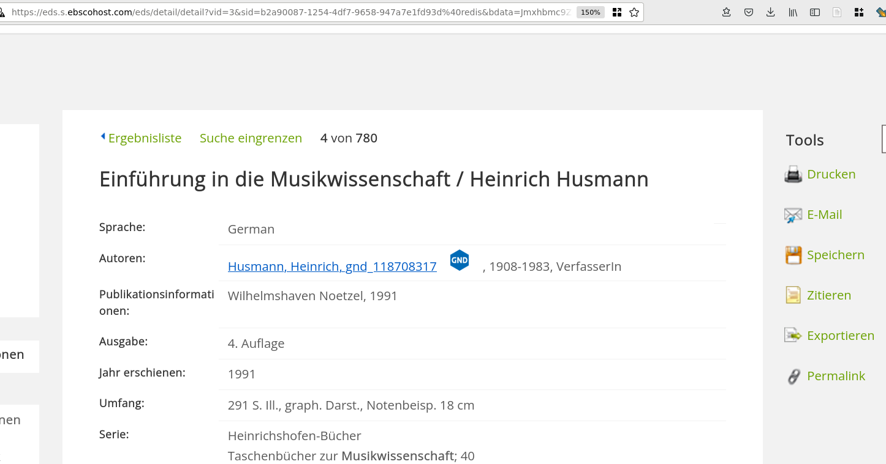

Literatur hinzufügen
Zotero erleichtert das 'Einsammeln' von Literatur ungemein. In einer Vielzahl von Bibliothekskatalogen, auf Verlagsplattformen,Literaturdatenbanken oder auch bei online-Buchhandlungen können Sie aus dem Browser heraus mit einem Klick die bibliographischen Angaben herunterladen.
Hinzufügen über das Browser-Plugin

Dasselbe ist auch im Opac möglich:

Auch auf Google Books lassen sich Titel mit einem Klick importieren.

Neben 'Literatur' im eher konventionellen Sinn (Bücher, Aufsätze) verzeichnet Zotero auch Websites, Youtube-Videos, Blogeinträge und vieles mehr.
Hinzufügen per Identifier
Es lassen sich aus Zotero heraus Titel durch Eingabe verschiedner Identifiers (DOI, ISBN, PubMed IDs und arXiv IDs) halbautomatisch hinzufügen.
Klicken Sie hierzu auf das Zauberstab-Symbol und geben Sie den Identifier ein.

Zotero versucht die entsprechenden bibliographischen Informationen aus verschiedenen Datenbanken zu importieren.
Manuelle Eingabe von Titeln
Falls kein (halb-)automatischer Import möglich ist oder Sie aus anderen Gründen nicht auf Fremddaten zurückgreifen möchten, können Sie Titel auch manuell eingeben.